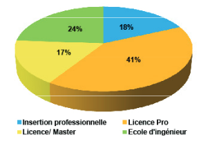

Dans notre établissement après le BAC, 54 % des élèves font une licence Informatique, 21% font une licences pro., 18% entre en école d'ingénieuret 5% vont dan sdes écoles privées. Ces informations nous sont données sur ce graphique ci-dessous que l'on peut retrouver sur le site de l'université dans la rubrique dédié au DUT Informatique.

L’analyste programmeur, ou aussi nommé programmeur, il est la personne qui cherche les failles et améliore les logiciels informatiques. Les critére d'amélioration d'un programme selon un analyste programmeur est premièrement le besoin du client, son travail est de trouver des solutions permettant de répondre a ces besoins. L'analyste programmeur pour mission de conservé l'actualité d'un programme, codé ces programmes et/ou de resoudres ses possibles problèmes. L'analyste programmeur peut aussi être ammené à encadrer des équipes. Il a aussi pour tache de créé des notice utilisateur.
La tâche principale d'un architecte logiciel est d'analyser les systèmes qui ont déjà été ecrit et de comprendre les attentes des utilisateurs pour la conception de systèmes qui répondent aux besoins des utilisateurs. A cette fin, l'architecte logiciel devra concevoir la cartographie applicative du système à l'endroit approprié. Dans le cadre d'un projet de développement logiciel existant, l'architecte logiciel découvrira le code développé et la documentation associée. Ensuite, l'architecte logiciel discutera avec les différentes parties prenantes du projet. Il négociera avec les gestionnaires et les demandeurs pour réduire les coûts d'exploitation de l'outil et étendre ses capacités.
Le terme développeur est très vaste et il regroupe beaucoup de sous-mértier. On définiera ceux-ci dans cette page(Lien vers Enes)
Lien vers la page ou Enes la décrit
Notre département propose également une formation d'une durée d'un an, nommé année spéciale qui a des débouchées différentes et qui permet d'apprendre. Cette formation accélérée permet au étudiant voulant posséder une formatiion informatique rapidement d'étudier pendant une année le domaine de l'informatique Suite a cette formation, 18% choississent l'insertion profféssionel comme on peutle voir sur le graphique ci-dessous provenant du site de l'université:
Comme on peut le voir grace aus statistique, cette formation nous permet de nous insérer rapidement dans le domaine informatique. Les metiers accéssibles sont les mêmes que pour la formation en 2 ans mais avec plus de difficultées car moins de spécialisation dans les domaines.